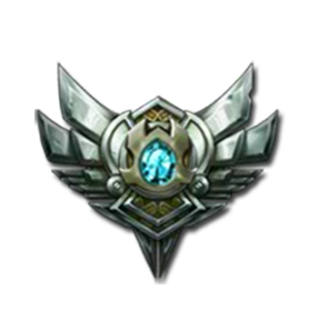
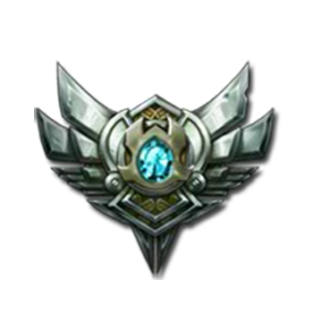

Que es Varaditico

Varaditico es una aplicacion web pensada y ambientada en todas aquellas ocaciones de frustracion de cuando nuestro coche sufrio una averia y no estabamos cerca de un mecanico u/o taller.Lo que hace esta aplicacion es mostrar los talleres,gasolineras y lugares de vetas de repuestos mas cercanas en ese momento. Esta aplicacion facilitara la comuicacion y ayudara al afectado lo mas rapido posible, estamos en constante crecimiento.
Que es prestigio? Esta basado en la cantidad de estrellas entre mas estrellas mas alto el prestigio y mas confiable sera para el proveedor y/o cliente. Hay varios pretigios:
 
